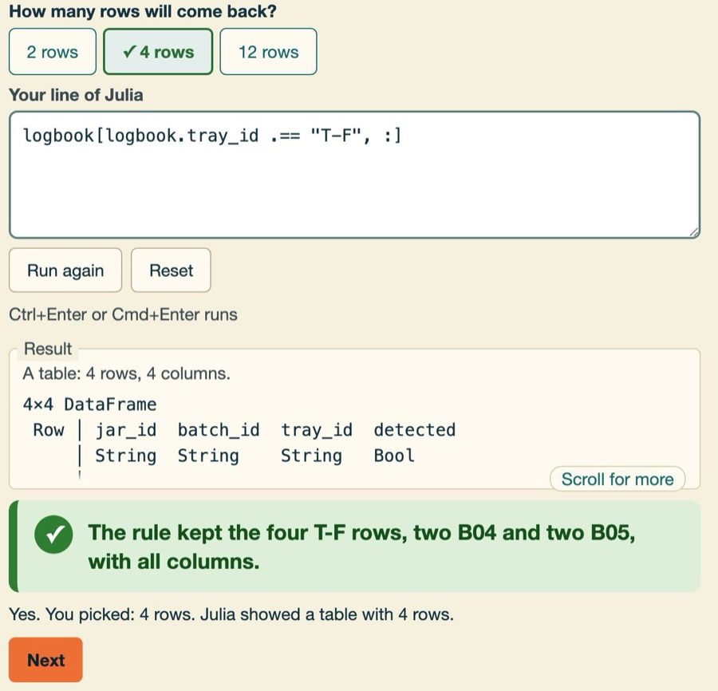
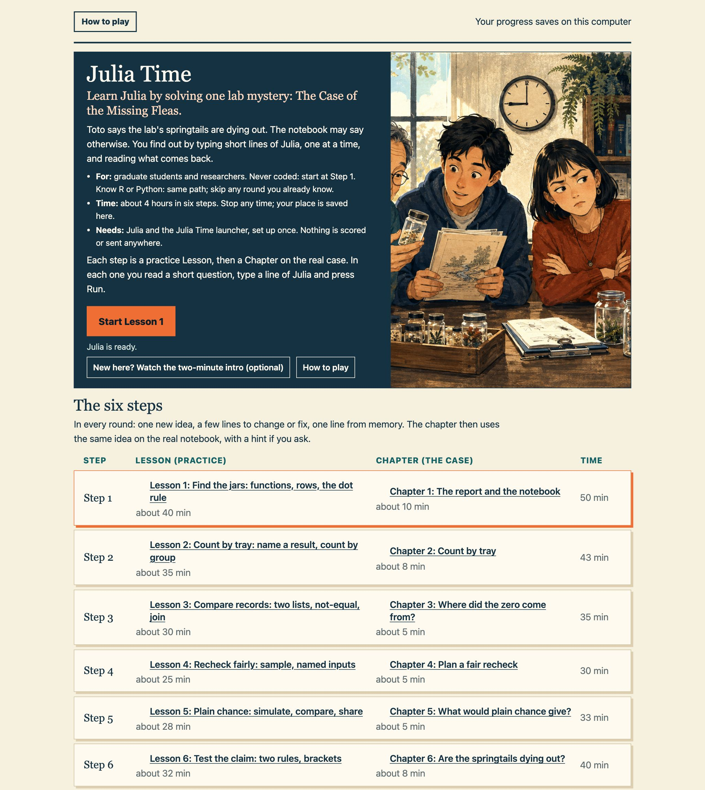

Learn Julia by solving a mystery.
Case 01 · The Missing Fleas
Toto's report says the lab's springtails, tiny relatives of snow fleas, are dying out. The notebook may say otherwise. Find out, one line of Julia at a time.
- 1Install Julia 1.10 (install guide).
- 2Download Julia Time, unzip it, double-click to play (Mac and Windows).
Free. About 1 GB of disk; internet once for setup (about a minute or two on a fast connection), then offline. Linux: from a terminal. Laptop or desktop, not a phone. Tested on macOS; tell us if anything breaks on yours.
Why Julia
Write the plain loop. It is already fast.
When your analysis needs its own loop, like a simulation or a bootstrap, Julia runs it fast with no rewrite.
Julia, loop
for b in 1:B
s = 0.0
for i in 1:n
s += x[rand(rng, 1:n)]
end
m[b] = s / n
end
Python, NumPy vectorised
rng.choice(x, (B, len(x))).mean(axis=1)
R, vectorised
rowMeans(matrix(sample(x, n * B, replace = TRUE), nrow = B))
Python, loop
for b in range(B):
m[b] = rng.choice(x, n).mean()
R, loop
for (b in 1:B) m[b] <- mean(sample(x, n, replace = TRUE))
R
Python
Julia
C
Our own measurement: one Mac Studio (M1 Ultra), macOS 26.7, 24 September 2026; Julia 1.10.12, R 4.6.0, Python 3.13.2, NumPy 2.3.3, Apple clang. One thread; median of 7 runs after a warm-up (11 for Julia and C in the sum); compile time is not shown. Built-in sum: Julia 1.9 ms, NumPy 2.2, R 17. Loading DataFrames takes about 1 second each time you start Julia.
- Reads like R and Python. R and Python notes sit beside the code, and every lesson has a pocket dictionary of their twins.
One character is missing.
A line from Lesson 1, with the dot removed
Toto, who wrote the report, wants the jars on tray T-F. logbook is the lab notebook, a table. Tap where the dot goes.
logbook[logbook.tray_id == "T-F", :]Not there, try another spot.
The game, on this line
Add the dot: .== asks every jar, while a plain == gives one answer that cannot pick rows.
Julia's own message
ArgumentError: invalid row index of type BoolA table: 4 rows, 4 columns.
4×4 DataFrame
Row │ jar_id batch_id tray_id detected
│ String String String Bool
─────┼─────────────────────────────────────
1 │ Q-045 B04 T-F false
2 │ Q-046 B04 T-F false
3 │ Q-055 B05 T-F true
4 │ Q-056 B05 T-F false
The rule kept the four T-F rows, two B04 and two B05, with all columns.
- In R
- After library(dplyr):
filter(logbook, tray_id == "T-F"). Julia puts the rule inside square brackets, with a dot. - In Python
logbook[logbook.tray_id == "T-F"]. In Julia you write .== with a dot, and end with a comma and a colon to keep every column.
You just fixed a line of Julia.

From the game
Six steps, about four hours.
Each step: a practice lesson, then a chapter of the case.
- Pick rows from a tableLesson 40 + Chapter 1050 min
- Count by groupLesson 35 + Chapter 843 min
- Join two tablesLesson 30 + Chapter 535 min
- Plan a fair recheckLesson 25 + Chapter 530 min
- Simulate chanceLesson 28 + Chapter 533 min
- Test the claimLesson 32 + Chapter 840 min
231 minutes, plus a 2-minute intro and 5-minute ending.


Still improving
Tell us what to make better, even this page or the trailer.
Coming next
- Write your own functions
- Loops, packages and your own data
- A full teacher's pack
- Tested with real students